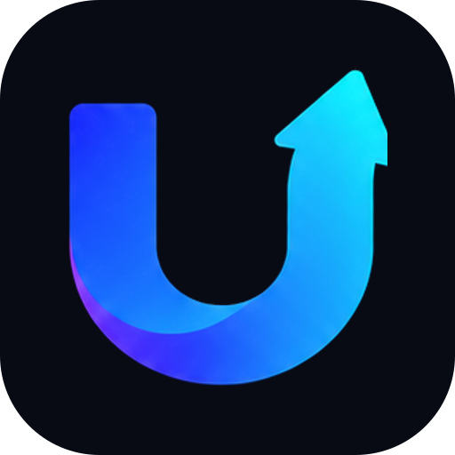

umotion AcademyEl sistema común que siguen todas las formaciones de umotion Academy: tres niveles, las mismas partes en cada nivel, los mismos formatos, exámenes y modelo de precios. Así, cada formación nueva se monta en el mismo orden y el alumno siempre sabe dónde está.
Formación de referencia: Inversión (la única publicada hoy). Las cifras de este documento salen de los datos reales de la web. El detalle completo de Inversión está en docs/CURRICULO.md.
Cómo leerlo: N1 N2 N3 marcan el nivel; A marca cada parte obligatoria de un nivel; los recuadros azules son reglas que no se cambian.
Gratis, sin registro.
Sesiones de 5 min.
Objetivo: hacerlo por tu cuenta.
Cierre: examen N1 + práctica + plan.
Insignia gratuita.
Suscripción (5 €/mes).
Clases de 15–30 min.
Objetivo: dominarlo tanto que podrías explicarlo.
Cierre: examen N2 + proyecto.
Insignia N2.
Curso (50 €) + certificación aparte (99 €).
Lecciones de 30–45 min.
Objetivo: base de nivel profesional.
Cierre: examen final + proyecto con revisión humana.
Certificado verificable.
Mientras los pagos no estén activos, los precios de los niveles 2 y 3 se muestran tachados en toda la web. Se activan cambiando un solo ajuste (PRICING.paymentsEnabled).
Una formación es un área completa de aprendizaje (hoy, Inversión). Toda formación se divide siempre en tres niveles; cada nivel, en módulos; y cada módulo, en piezas con el formato propio del nivel. Las piezas trabajan competencias concretas, que el sistema mide con preguntas para personalizar el plan de cada alumno.
| Término | Significado |
|---|---|
| Formación | Área completa (Inversión, y en el futuro otras). Aparece en el panel «Formaciones» de la web. |
| Nivel | 1, 2 o 3. Mismo nombre, promesa, formato y modelo de acceso en todas las formaciones. |
| Módulo | Bloque temático de un nivel, con un código corto de 2 a 4 letras. |
| Pieza | Unidad de estudio. Se llama sesión en N1, clase en N2 y lección en N3. |
| Competencia | Algo concreto que el alumno sabe hacer. Cada pieza y cada pregunta apuntan a competencias. |
| Cierre | Lo que hay que completar para terminar un nivel y obtener su reconocimiento. |
| Muestra | Pieza de un nivel de pago abierta a todos, para que se vea qué hay detrás. |
Se aplican a todas las formaciones y a todos los niveles.
Ninguna formación nueva puede saltarse estos principios. Si un tema los choca (por ejemplo, exige fórmulas), se explica por su significado y su uso, o se deja para un nivel superior.
Los tres niveles tienen el mismo papel en todas las formaciones. Cambia el tema, no la estructura.
| N1 Base | N2 Avanzado | N3 Profesional | |
|---|---|---|---|
| Promesa tipo | Puedes hacerlo por tu cuenta, con criterio, y detectar lo que no te conviene. | Lo dominas tanto que podrías explicarlo con rigor a otra persona. | Base conceptual de nivel profesional, con certificado privado verificable. |
| Para quién | Cualquiera, desde cero. | Quien ya practica y quiere entender a fondo. | Quien quiere nivel profesional o trabajar en el sector. |
| Pieza | Sesión de 5 min | Clase de 15–30 min | Lección de 30–45 min |
| Volumen orientativo | 60–80 sesiones (≈ 6 h) | 50–70 clases (≈ 20 h) + clase del mes | 45–60 lecciones + proyecto (≈ 40 h) |
| Acceso | Gratis, sin registro, con anuncios | Suscripción mensual o anual, con prueba | Curso de pago único; certificación aparte |
| Cierre | Examen N1 + práctica + plan personal | Examen N2 + proyecto «Tu primera clase» | Examen final + proyecto profesional con revisión humana |
| Reconocimiento | Insignia gratuita | Insignia de Nivel 2 | Certificado umotion verificable |
| Requisito | Ninguno | Nivel 1 terminado o examen de acceso | Nivel 2 terminado o examen de acceso |
Cada nivel tiene un examen de acceso opcional: con un 80 % o más se puede saltar el nivel anterior. Dentro de cada nivel, el diagnóstico adaptativo decide el orden personal del alumno.
«Certificado privado emitido por umotion. No es una titulación oficial, no habilita para prestar asesoramiento ni sustituye las cualificaciones exigidas por el supervisor.» Debe aparecer en la página del Nivel 3, en el certificado y en su página de verificación. Palabras prohibidas: «oficial», «acreditación oficial», «equivalente a…», «habilita».
Todo nivel, de cualquier formación, se define con estos siete campos (son los de tiers en curriculum.json y los que muestra su página de presentación):
| Campo | Qué contiene | Ejemplo (Inversión, N1) |
|---|---|---|
| Título | Nombre corto del nivel | Invertir por tu cuenta |
| Promesa | «Al terminar puedes…», verificable | Al terminar puedes montar, comprar, mantener y revisar tu propia cartera sin depender de nadie, y detectar productos y propuestas que no te convienen. |
| Para quién | Una frase | Cualquiera, desde cero. |
| Formato | Tipo y duración de pieza | Sesiones de 5 minutos |
| Volumen | Número de piezas y horas | 77 sesiones (54 del núcleo y 23 de ampliación), unas 6,5 h |
| Cierre | Qué hay que completar | Examen del Nivel 1, ejercicio con dinero ficticio y «Mi plan en una página» |
| Reconocimiento | Insignia o certificado | Insignia gratuita «Fundamentos de inversión — umotion» |
| Parte | Qué es | Reglas |
|---|---|---|
| A Etapa de base | El primer módulo: lo imprescindible antes de empezar (en Inversión, el Camino Cero). | Obligatoria. Tiene su propio examen corto. Es requisito del examen N1. |
| B Núcleo | Los módulos que te dejan hacerlo por tu cuenta. | Cuentan para el examen N1. Orden por defecto definido; el plan personal puede reordenar. |
| C Ampliación | «Para saber más»: módulos opcionales. | No cuentan para el examen. Se recomiendan cuando el alumno ya tiene su plan. |
| D Cierre | Examen N1, práctica sin riesgo y «Mi plan en una página». | Con todo completado se obtiene la insignia gratuita. |
| E Biblioteca | Lecturas, guías y herramientas de apoyo. | Siempre gratis. Enlazadas desde las sesiones. |
| Parte | Qué es | Reglas |
|---|---|---|
| A Módulos | De 10 a 12 módulos de clases. | Uno de ellos, el primero, trata de cómo explicar el tema con responsabilidad. |
| B Muestras abiertas | De 1 a 3 clases gratuitas. | Se publican en la web estática; el resto se sirve desde el servidor. |
| C Clase del mes | Una clase nueva cada mes. | Da sentido a la suscripción. |
| D Cierre | Examen N2 y proyecto «Tu primera clase». | Insignia de Nivel 2. |
| Parte | Qué es | Reglas |
|---|---|---|
| A Módulos | De 10 a 12 módulos de lecciones, más un módulo de proyecto. | Rigor profesional, siempre conceptual. |
| B Clientes ficticios | Cuatro personas inventadas que aparecen en los expedientes y el proyecto. | Cada caso lleva el aviso de ejemplo ficticio. |
| C Muestra abierta | Al menos una lección gratuita. | Igual que en N2. |
| D Cierre | Examen final y proyecto profesional. | Revisión humana obligatoria. Certificado verificable. |
Cada nivel tiene una plantilla fija. Todas las piezas de ese nivel, en cualquier formación, siguen los mismos bloques en el mismo orden.
Límites: 450–650 palabras visibles, cero fórmulas. Opciones de respuesta siempre una debajo de otra.
| N1 Examen N1 | N2 Examen N2 | N3 Examen final N3 | |
|---|---|---|---|
| Requisito | Etapa de base terminada | Nivel 2 cursado | Nivel 3 cursado |
| Preguntas | 30 aleatorias del núcleo, al menos 2 por capacidad | 50 aleatorias de un banco de 250 o más | 100 aleatorias de un banco de 600 o más |
| Tiempo | Sin límite | 60 min | 150 min |
| Aprobado | 80 % | 80 % | 70 % global y 50 % en cada módulo |
| Intentos | Ilimitados, 24 h de espera tras suspender | 3 al mes | 3 incluidos |
| Proyecto | Práctica sin riesgo + «Mi plan en una página» | «Tu primera clase»: guion de 10 min (aprobado: 70/100) | Plan integral o informe de empresa, 2.500–4.000 palabras (aprobado: 70/100) |
| Corrección | En el dispositivo; verificable solo con cuenta y corrección en el servidor | Tutor con rúbrica + revisión humana de muestra y dudosos | Tutor con rúbrica + revisión humana obligatoria |
| Reconocimiento | Insignia gratuita | Insignia de Nivel 2 | Certificado verificable (código único, Open Badges, LinkedIn) |
El modelo de acceso es igual en todas las formaciones. El importe puede cambiar por formación, pero no la forma.
| Nivel | Modelo | Inversión (hoy) | Qué incluye |
|---|---|---|---|
| N1 Base | Gratis con anuncios | Gratis | Todo el nivel, sin registro. |
| N2 Avanzado | Suscripción mensual o anual, con días de prueba | Clases, clase del mes, examen e insignia N2. | |
| N3 Profesional | Curso de pago único | Lecciones, test y examen de práctica. | |
| N3 Certificación | Pago aparte, cubre la revisión humana | Examen final, proyecto revisado y certificado. |
Botón de tres líneas arriba a la izquierda. Abre un panel desde la izquierda con la lista de formaciones. Al pulsar una formación se despliegan sus tres niveles; al pulsar un nivel se abre su página de presentación. Cada formación nueva se añade como una entrada más del panel, con la misma estructura.
En la portada, debajo del párrafo de bienvenida, cada formación tiene un pósit (un cuadrado de color) que lleva a su página. Al añadir una formación se añade su pósit (FORMATIONS en src/pages/es/index.astro) y su entrada del panel (FORMATIONS en src/components/Drawer.astro).
| Pieza | Función |
|---|---|
| Diagnóstico («Empezar») | Objetivos (varios a la vez), experiencia e intereses; propone un plan personal. |
| Mi plan | Siguiente pieza recomendada con sus motivos, progreso por nivel y áreas. |
| Repaso | Repaso espaciado con preguntas de los niveles a los que hay acceso. |
| Tutor | Resuelve dudas sin recomendar productos; en N2 corrige «Explícalo tú». |
| Glosario | Términos con definición corta y nivel; tarjetas en cada pieza. |
| Cuenta opcional | Guarda el progreso en la nube y permite avisos diarios a las 16:00. |
| Elemento | Convención | Ejemplo |
|---|---|---|
| Pieza de N1 | <mod>-NN-slug | ya-06-aportar-cada-mes |
| Clase de N2 | n2-<mod>-NN-slug | n2-rf-03-la-curva-de-tipos |
| Lección de N3 | n3-<mod>-NN-slug | n3-reg-02-mifid-ii-por-dentro |
| Pregunta | id de la pieza sin guiones ni slug + -qN | ya06-q1 |
| Competencia | kebab-case en español, sin prefijo de nivel | curva-tipos |
| Módulo | código de 2 a 4 letras | rf, reg |
Cada formación nueva tiene un identificador corto que se antepone a sus rutas, módulos, piezas y competencias para que no choquen con Inversión. Emprendimiento: rutas /es/emprendimiento/…, módulos em-…, sesiones em-im02-…, preguntas em-im02-q1, competencias em-… (N2 em2-…, N3 em3-…). Su progreso se guarda aparte (academy-emprendimiento). Inversión conserva sus rutas actuales porque cambiarlas rompería enlaces y progreso guardado.
Los identificadores publicados no se renombran ni se borran: el progreso de los alumnos se guarda con ellos.
| Dato | Archivo |
|---|---|
| Ficha de niveles, temario N2/N3, capacidades N1 | src/data/curriculum.json |
| Sesiones de N1 | src/content/sessions/ |
| Clases y lecciones (N2/N3) | src/content/clases/ (campo tier) |
| Competencias (con nivel) | src/data/skills.json |
| Glosario (con nivel) | src/data/glossary.json |
| Precios | src/config/site.ts → PRICING |
| Panel de formaciones | src/components/Drawer.astro |
| Otras formaciones: niveles, módulos, competencias, textos y temario N2/N3 | src/data/<id>.json (registradas en src/lib/formations.ts) |
| Otras formaciones: sesiones de N1 y glosario | src/content/<id>/ y src/data/glossary-<id>/ (un archivo por módulo) |
| Páginas comunes de formación | src/pages/es/[f]/: portada, niveles, módulos, sesión, examen y glosario |
| Herramientas propias de una formación | FORMATION_TOOLS en src/lib/formations.ts (ejemplo: Claude y ChatGPT) |
| Reproductor de sesiones (común) | src/components/SessionPlayer.astro |
| Permitido | Prohibido |
|---|---|
| Explicar categorías de producto | «Te recomendamos comprar X» |
| Usar productos reales para enseñar a leer su documentación | Carteras concretas presentadas como «la mejor» |
| Dar criterios generales («fíjate en el coste total») | Adaptar una recomendación a los datos personales del alumno |
| Casos de clientes ficticios en N3 | Prometer rentabilidades o hacer predicciones |
Borrador → Pendiente de revisión humana → Revisado (con nombre del revisor real). El contenido de pago no se publica sin estar revisado por una persona con la cualificación adecuada.
Pasos en orden. Cada fase la aprueban los socios antes de empezar la siguiente.
La primera formación publicada. Es el modelo que deben copiar las siguientes.
Al terminar puedes montar, comprar, mantener y revisar tu propia cartera sin depender de nadie, y detectar productos y propuestas que no te convienen.
| Parte | Módulo | Qué se aprende | Sesiones |
|---|---|---|---|
| A Base | Camino Cero | Lo básico antes de poner un euro | 14 |
| B Núcleo | Productos de inversión | Qué es cada producto y para quién encaja | 9 |
| Formas de invertir | Por tu cuenta, gestionada o automatizada | 8 | |
| Invertir ya | Cómo empezar, paso a paso | 8 | |
| Empieza con Trade Republic | Abrir la cuenta, usar la app y comparar | 8 | |
| Mantener el rumbo | Revisar, aguantar, cuándo vender y declarar | 7 | |
| C Ampliación | Conocer empresas | Cómo ver si una empresa va bien | 9 |
| Entender noticias | Qué te afecta y qué no | 7 | |
| Tipos de trading | Entenderlo sin jugarte el dinero | 7 | |
| D Cierre | Examen N1 · práctica · plan en una página | Insignia gratuita «Fundamentos de inversión — umotion» | — |
Total: 77 sesiones.
Al terminar dominas la inversión lo bastante como para explicársela con rigor a otra persona y responder sus dudas habituales sin recomendarle productos.
| Código | Módulo | Clases | Horas |
|---|---|---|---|
| ens | Enseñar inversión con responsabilidad | 4 | 1.5 |
| mer | Mercados y protección del inversor | 5 | 1.7 |
| veh | Fondos, ETF y vehículos | 6 | 2 |
| rf | Renta fija a fondo | 6 | 2 |
| rv | Renta variable y estilos | 6 | 2 |
| car | Construcción de carteras | 7 | 2.5 |
| fis | Fiscalidad práctica en España | 6 | 2 |
| pla | Planificación financiera personal | 6 | 2 |
| emp | Análisis de empresas | 6 | 2.3 |
| mac | Macroeconomía e historia de los mercados | 5 | 1.7 |
| con | Conducta del inversor | 4 | 1.3 |
| alt | Productos complejos y alternativos | 5 | 1.8 |
Total: 66 clases, unas 23 h, más la clase del mes.
Al terminar tienes una base conceptual que cubre áreas de conocimiento comparables a las de formaciones como EFA (EFPA España) o CFA Investment Foundations, y puedes obtener el certificado umotion verificable.
| Código | Módulo | Lecciones | Horas |
|---|---|---|---|
| reg | Regulación y protección del inversor | 6 | 3.8 |
| eti | Ética y conducta profesional | 4 | 2.5 |
| eco | Economía y mercados financieros | 5 | 3.1 |
| rf | Renta fija profesional | 6 | 3.8 |
| rv | Renta variable y valoración | 6 | 3.9 |
| iic | Instituciones de inversión colectiva y selección de fondos | 6 | 3.8 |
| der | Derivados y activos alternativos | 6 | 3.8 |
| gcr | Gestión de carteras y del riesgo | 7 | 4.6 |
| fis | Fiscalidad del inversor en España | 5 | 3.2 |
| pla | Planificación financiera integral | 5 | 3.2 |
| pry | Proyecto profesional | Proyecto | 6 |
| Cliente | Situación | Temas |
|---|---|---|
| Lucía, 27 años | Ingeniera en su primer empleo fijo, sin deudas, ahorra cada mes y nunca ha invertido. | Perfil de riesgo, primera cartera, horizonte largo, sesgos |
| Familia Ortega, 41 y 39 años | Dos hijos, hipoteca, quieren ahorrar para estudios y jubilación. | Varios objetivos, seguros, fiscalidad familiar, planes de empleo |
| Antonio, 58 años | Prejubilado con indemnización, perfil conservador, cartera bancaria cara con productos que no entiende. | Renta fija, productos complejos, costes, jubilación, sucesión |
| Elena, 35 años | Autónoma con ingresos irregulares. | Colchón ampliado, fiscalidad, previsión sin pensión de empleo |
Cópiala para cada formación nueva y complétala antes de escribir contenido.
| Campo | Respuesta |
|---|---|
| Nombre | |
| Identificador corto | |
| Para quién | |
| Fuentes oficiales principales | |
| Revisor del contenido | |
| Áreas de competencias |
| Campo | Respuesta |
|---|---|
| Título | |
| Promesa («Al terminar…») | |
| Para quién | |
| Formato | |
| Volumen | |
| Cierre | |
| Reconocimiento | |
| Módulos (partes A, B y C) | |
| Capacidades del examen |
| Campo | Respuesta |
|---|---|
| Título | |
| Promesa («Al terminar…») | |
| Para quién | |
| Formato | |
| Volumen | |
| Cierre | |
| Reconocimiento | |
| Módulos | |
| Precio (suscripción) |
| Campo | Respuesta |
|---|---|
| Título | |
| Promesa («Al terminar…») | |
| Para quién | |
| Formato | |
| Volumen | |
| Cierre | |
| Reconocimiento | |
| Módulos | |
| Precio del curso / de la certificación |